GOAL: LIMIT GLOBAL TEMPERATURE RISE TO 1.5°C (2.7°F)
CO2 EMISSIONS BUDGET:
DEADLINE: ZERO EMISSIONS BY:
LIFELINE: % OF WORLD'S ENERGY FROM RENEWABLES:
TOGETHER WE CAN CHANGE!
MIT Climate Clock
"The 2018 Intergovernmental Panel on Climate Change Report starkly presented the challenge society faces to achieve rapid progress on cutting emissions in this decade:
Without increased and urgent mitigation ambition in the coming years, leading to a sharp decline in greenhouse gas emissions by 2030, global warming will surpass 1.5°C in the following decades...
We need to come together now, both within MIT and with like-minded people and institutions everywhere, if our common effort is to succeed."
"If we act swiftly, it is not too late
to prevent much more severe changes to the Earth's climate." - MIT Climate Portal
The Climate Clock is the effort of a diverse group of students, faculty
and alumni who seek to share the urgency of the climate crisis with the wider
community in order to raise awareness and spark action. As members of the
younger generations, who will experience the impacts of decisions made by
those in power today, we feel it is imperative to make our voices heard.
Currently, there is no everyday measure that informs us about the health
of our planet. The MIT Climate Clock presents to the MIT community and to the
wider world essential information about the climate emergency that is here now.
The purpose of the Climate Clock is not to frighten or politicize, but to raise
awareness of troubling scientific measures and to motivate people to come
together to plan for our collective health and safety. Our role is to be one
warning beacon among many.
World Scientists Warning of a Climate Emergency
Scientists from around the world warn us that we are in the midst of a
climate emergency. In their "World
Scientists Warning of a Climate Emergency," over 14,000 scientists from
158 countries present graphical data showing vital metrics about our climate.
They write that, "greenhouse gas emissions are still rising, with increasingly
damaging effects," and that, "with few exceptions, we are largely failing to
address this predicament."
This warning draws on a long history of scientists raising alarms about
the state of our earth. In 1992, MIT professor and Nobel Prize winner Henry
Kendall spearheaded the "World
Scientists Warning to Humanity 1992," which argued for the need to curb
environmental degradation, lest we "so alter the living world that it will
be unable to sustain life in the manner that we know."
In parallel to scientists' warnings, over 1,900 local governments in 34
countries have now formally declared a climate emergency. These efforts are
essential and reinforce our obligation as citizens of the world to seek to
protect the earth before it is too late. It is in this spirit that we
undertook the climate clock project.
The Idea
What the Climate Clock Shows
We project scientifically accurate information on the top of the south
face of the Green Building. The building is both the tallest building in Cambridge,
and home to the MIT Department of Earth, Atmosphere and Planetary Sciences.
The MIT Climate Clock features four lines that highlight the need for climate
action.
TOGETHER WE CAN CHANGE!
Goal
to limit global temperature increase to 1.5°C (2.7°F) which is the target
embraced in the COP21 Paris Agreement. The Paris Agreement, signed in 2015, is a legally binding international treaty on climate change to "limit global warming to well below 2, preferably to 1.5 degrees Celsius, compared to pre-industrial levels"
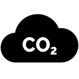
Carbon Dioxide Emissions Budget
a very large number from which one derives the actual
time of the climate clock. The "Carbon Dioxide Emissions Budget" represents how much carbon dioxide
the world as a whole can release into the atmosphere with at least a 66% chance of avoiding
global average temperature increases of 1.5°C (2.7°F).
Deadline
Credible current projections suggest we have about seven years left at current
emission rates. The "Deadline" is another way of expressing the carbon dioxide emissions budget.
It's the time we have left to take decisive action to limit global average temperature increase
to 1.5°C (2.7°F).
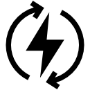
Lifeline
The "Lifeline" represents the percentage of the world's energy that is
currently provided through renewable sources.
The Solutions
Change for Climate!
Let's change our climate trends for the better by scaling up great solutions!
For additional inspiration and action-oriented ideas, visit the following resources:
Hosted November 13-14, 2022, TEDx-Boston Planetary Stewardship talks "elevate transformative ideas on climate"
Climate Interactive
"creates and shares tools that drive effective and equitable climate action." Policies
enable solutions, and what better way to learn than to try out simulated scenarios
yourself and share with others!
MIT-Industry collaboration via the MIT Climate and Sustainability Consortium
is all about "working together to vastly accelerate the implementation of large-scale,
real-world solutions, across sectors, to help meet global climate and sustainability challenges"
MIT Climate Grand Challenges is
"a whole-of-MIT initiative to deliver high-impact climate solutions for the world"
For additional MIT Climate Solutions - stay tuned for updates!
If you have a solution you'd like to share with us, please Contact Us.
The Numbers
Where they come from
Our carbon dioxide budget data is aligned with the latest IPCC AR6 2021 report
(see table SPM.2). The resulting deadline should closely mirror the numbers displayed on the Mercator Institute website
. Lifeline estimates are the result of counting forward from the middle of 2020 starting from 12.55%, based on
data from the World Energy 2021 Special Report.
Carbon Dioxide (CO2) Accounting Guide
In order to figure out the time available for action, one can compute a carbon dioxide budget.
The budget answers the question "how much carbon dioxide can we put into the atmosphere,
globally, before reaching 1.5°C above pre-industrial levels?"
To solve for the budget, one needs to know the "account limit" and the expenses.
The Account Limit: Carbon Dioxide Threshold
Using measurements and models, scientists calculated the maximum amount of carbon dioxide
that can be in the atmosphere without exceeding a certain average temperature above
pre-industrial levels by 2100. The number is approximately 400 giga-tonnes of carbon dioxide
[IPCC AR6].
The Expenses: Atmospheric Carbon Dioxide
But how much carbon dioxide is already in the atmosphere? Measurements are taken regularly
at Mauna Loa Observatory in Hawaii. At the start of 2022, there was
already 417
ppm of carbon dioxide in the atmosphere, up from under 300ppm in 1950
[IPCC
AR6, A.1.1]. Every year that more carbon dioxide is emitted into the atmosphere,
atmospheric carbon dioxide "expenses" increase. By the same token, as we reduce our
CO2 emissions, or sequester carbon, our expenses decrease. If our sequestration
equals our emissions, we've hit "net-zero," such that we're removing as much carbon
from the atmosphere as we're putting into it.
The Balance: CO2 Emissions Budget
The balance is simply the limit minus the carbon dioxide already in the atmosphere. We
call this number the "CO2 Emissions Budget." It decreases each day as
more carbon dioxide goes into the atmosphere.
To convert the carbon dioxide budget into a countdown clock, we make assumptions about
our world. We assume that global carbon dioxide emission rates stay fixed, and calculate
how much time is left before the budget is used up. We use the assumption that
the CO2 Emissions budget is reduced by 42.2 Gt of CO2 per year, or 1,337 tonnes/sec
based on this reference: Mercator Research
Institute on Global Commons and Climate Change (MCC).
The Mercator Research Institute relies on data from the recent IPCC Special Report
on Global Warming of 1.5°C . Calculations are based on the year 2020, counting
down the expended carbon budget from there. The budget specifically addresses
carbon dioxide, not directly including additional greenhouse gasses such as
methane. Carbon dioxide is particularly important, as it remains in the atmosphere
on the order of 300-1000 years.
There are other limitations to our budget calculation. The annual emissions of
42.2 Gt-CO2/yr from the MCC include sources like "burning fossil fuels, industrial
processes and land-use change". They do not factor in additional emissions from
long-term changes in natural sources and sinks due to potential thresholds and
tipping points, such as such as permafrost melting causing the release of gas
hydrates, melting of the Greenland or Antarctic ice sheets, slowing down the
North Atlantic deep ice circulation or the dieback of the Amazon rainforest.
While the effects of these natural sources are large, the timescale for these
changes may be on the order of decades to centuries, which is much longer than
the timescale of our climate clock. Thus we chose not to include these in the
budget (but will continue to revisit those issues).
COVID-19 temporarily changed our global carbon dioxide emission rate. According to
the Global
Carbon Project report from December 11, 2020, "Total CO2 emissions
from human activities (from fossil CO2 and land-use change) are set to
be around 40 billion tonnes of CO2 in 2020, compared to 43 billion
tonnes of CO2 in 2019." Furthermore, "global fossil CO2 emissions are
expected to decline approximately 2.4 billion tonnes of CO2 in 2020 (-7%), a record
drop. The decrease in emissions, caused by COVID-19 confinement measures in place,
brings global fossil CO2 emissions to 34 billion tonnes of CO2... Emissions in 2019
were only 0.1% above emissions in 2018, at 36.4 billion tonnes of CO2."
Since 2020, we have begun to see a rebound effect, however. Thus we can approximate
total annual emissions, mostly from fossil fuels and land use changes, as 42.2
GtCO2 for the purposes of our climate clock.
Of course there is uncertainty in our future emissions. Our goal is not to predict
the future, but rather to ignite action to move towards a liveable future for humanity.
Visit the Global
Carbon Project to learn from scientists about how international responses to COVID-19
have impacted emissions, and thus the carbon dioxide budget.
Measuring the Progress of Renewable Energy
Energy produced from burning fossil fuels contributes more than any other source
to the increasing levels of carbon dioxide in the atmosphere. Sourcing energy from
renewables instead means less carbon going into the atmosphere. It was estimated
in the World Energy Special Report 2021 by BP that in 2020, 12.55% of the world's
energy came from renewable sources and hydro-electric: 5.7% from renewables, and
6.86% from hydro [World
Energy Special 2021 Report, page 11]. Including nuclear
leads to ~16.8%. Energy consumption consists of electricity, transport and heating
energy. When examining just electricity, renewables (including hydro) comprise
27.8% of the electricity sources in the world [WE report, page 65]. In
our accounting, renewables include solar, wind, hydropower, and modern bio-fuels.
We do not include nuclear, or traditional biofuels (such as fuel-wood, forestry
products, animal and agricultural waste) in the estimate. Around the world, even
as the supply of energy increases, more and more energy is derived from renewable
sources.
To pass net-zero, the point when globally we begin extracting carbon from the
atmosphere, we need this percent to increase as much as possible towards 100%.
According to World Energy data, the growth rate of renewables (and biofuels, no
hydro) for 2020 was 12.5%. In fact, despite decreases in energy consumption,
renewable generation still increased. For hydro it was 1% with 4296 Terra-watt-hours
of energy from hydro.
For our computations, we use the following numbers:
2020 renewables (hydro+solar) = 38.16 + 31.71 = 69.87eJ
2019 renewables (hydro+solar) = 37.69 + 28.82 = 66.51eJ
2020 total energy consumption = 557.10eJ
2019 total energy consumption = 581.51eJ
2020 renewable energy / total = 12.541734%
2019 renewable energy / total = 11.43746%
For our projection, we begin at 12.541734% at the middle of 2020, and approximate
the increase of renewables based on 3.501617*10^-8 %/sec, which comes from
(12.541734%-11.43746%)/(365*24*3600s). If nuclear were included as a low-carbon
source, the lifeline would be roughly 4.24% higher.
The Creation
The Story of the Climate Clock
The MIT Climate Clock team originated as an MIT D-Lab term project in
Spring 2020, and has continued from then until now. Originally conceived
of as a hack part of a long tradition of hacks-tomfooler-pranks
around campus — the climate clock idea has changed over time. It was originally
inspired by the CITGO sign in Boston, a prominent feature of the Boston
skyline, advertising a petroleum corporation. We wanted to create a new
landmark on the skyline, marking a different era with different priorities and values.
The MIT Climate Clock team ultimately opted not to do the clock as a hack,
but instead to pursue MIT Administration approval, because we sought to display
the climate clock in the most fitting location on campus — the top of the
Department of Earth Atmospheric and Planetary Science building — and to do
so long-term. Like clocks in medieval town centers, we wanted our clock to
be seen every day at the center of our campus.
Building the Clock
You can share the Climate Clock too!
You can build a Climate Clock in your own home, community, school or university,
even at a public park or public square. You can promote a climate clock on social media.
How many students does it take to build a climate clock? Not very many,
actually (our core team is currently comprised of nine people). Here are a few
resources if you want to build your own climate clock on your campus, school,
at work, in your city, or on a webpage.
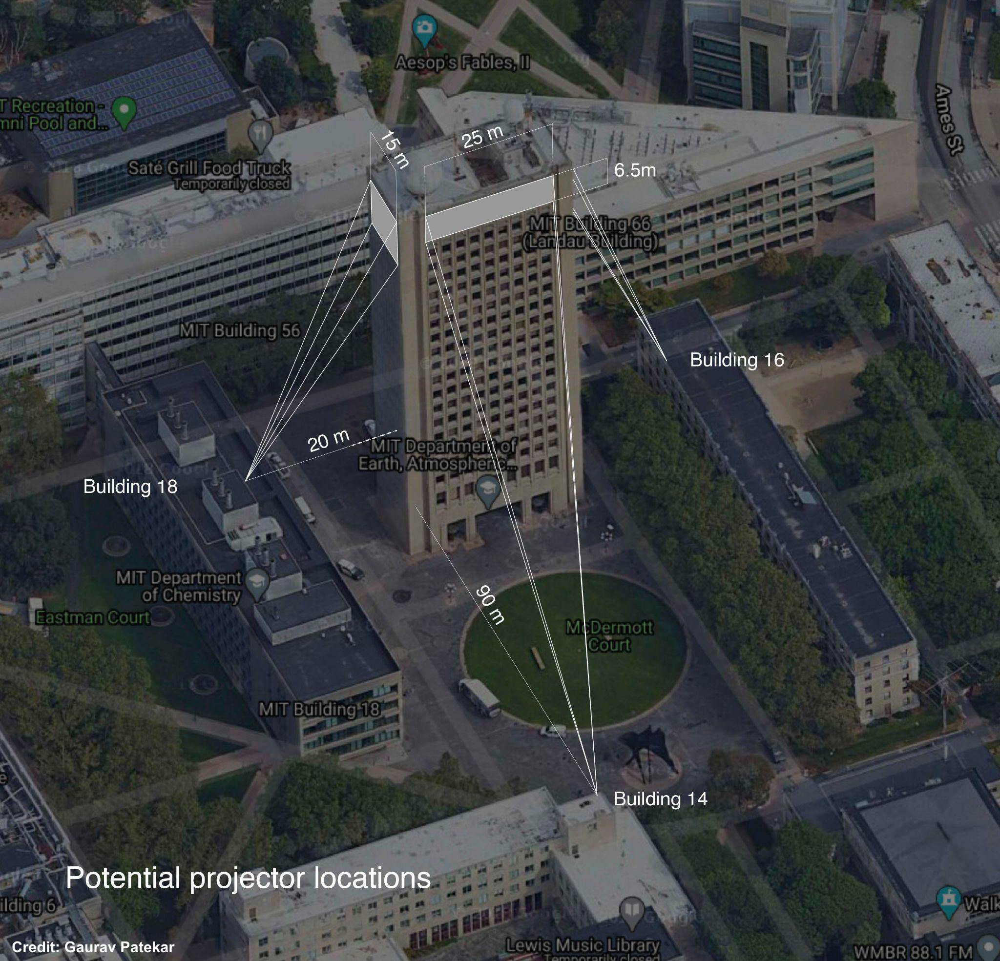
Check out
our code for the numbers and clock website
From April, 2021 to the present, the MIT Administration has approved and
supported the MIT Climate Clock for four short-term projections:
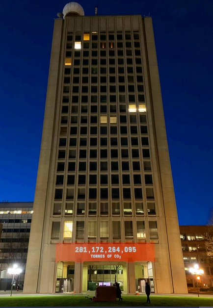
Projection 1: April 22 (Earth Day) to April 30, 2021. The location of
this projection was at the bottom of the south façade of the MIT Green Building.
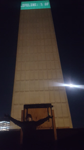
Projection 2: October 29 to November 21, extended to December 21, 2021. The location of this
projection was at the top of the west façade of the MIT Green Building.
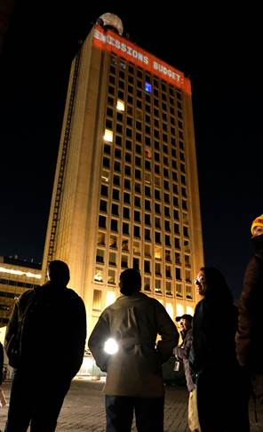
Projection 3: April 22 (Earth Day) to May 27, 2022. The location of this projection
was at the top south façade of the MIT Green Building.
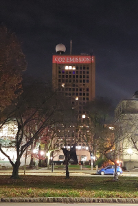
Projection 4: November 8 to 18, 2022. The location of this projection
was at the top south façade of the MIT Green Building.
Having now completed the 4th short-term projection of the MIT Climate Clock,
we are once again requesting of the MIT Administration/MIT Climate Nucleus
permission to display the MIT Climate Clock long-term.
In addition, the team has conducted a 10-question climate survey of the MIT
community over a period of two weeks concurrent with COP 27. Survey results will
be posted here once reviewed and approved by the Climate Nucleus.
In 2021, the team projected onto the west side of the Green building, as
seen in the video below.
Video Credit: Gaurav Patekar
Beyond MIT, with our partners and team members at Harvard University, we projected the climate
clock in Harvard Square on Lehman Hall for an Earth Day event on April 22nd, 2022.
As part of our parallel Earth-Day events at MIT and Harvard, we engaged
people using Climate
Interactive's En-ROADS simulator to learn about the climate.
Plant-based ice cream served in compostable dishes was served to showcase
sustainable food solutions.
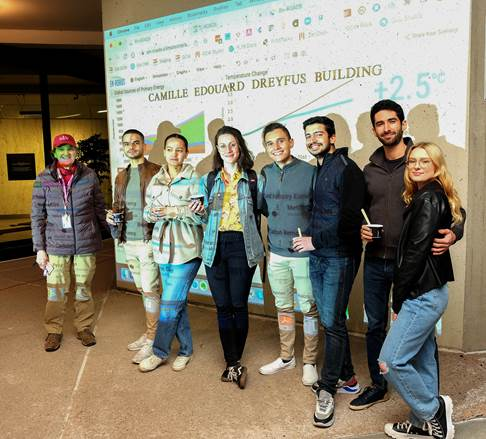
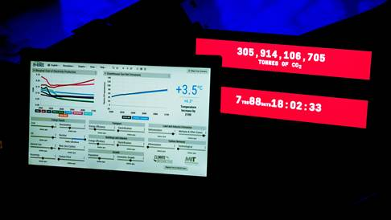
Photo Credit: Ella Lopez
Just a handful of team members took the climate clock idea from dream to
reality, and we did so during the COVID-19 pandemic!
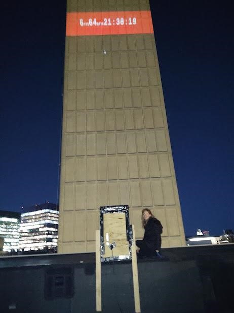
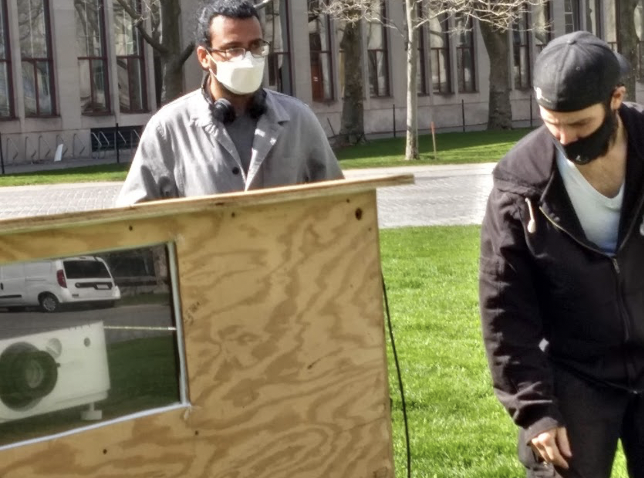
Photos show MIT Climate
Clock team members: Jillian James (MIT'10, '16) left, and Gaurav Patekar (MIT'21)
center and Alejandro Diaz (MIT'21), right.
Going forward, we will integrate feedback from the community and seek
long-term approval, now that we have successfully demonstrated "proof of concept."
Climate Clock LED Backpack
Taking the clock on the road
Credit: Claire Wang
Beyond the big screen, we've gone mobile via backpack! Gaurav Patekar (MIT'21)
conceived of a community awareness project where climate information is displayed
on an LED backpack. People can volunteer to borrow the backpack for a week,
sparking conversations about our climate. Volunteers can then pass the
backpack on to another person to continue the chain of engagement.
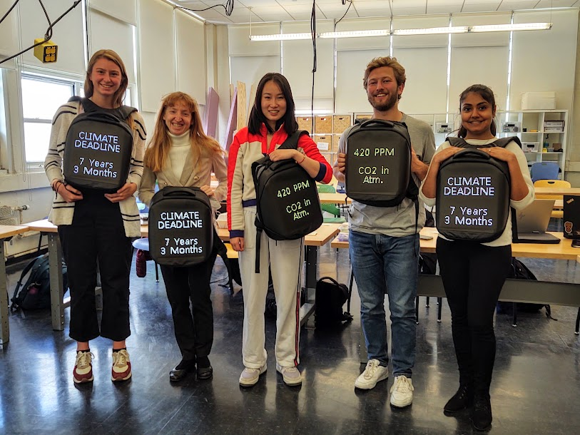
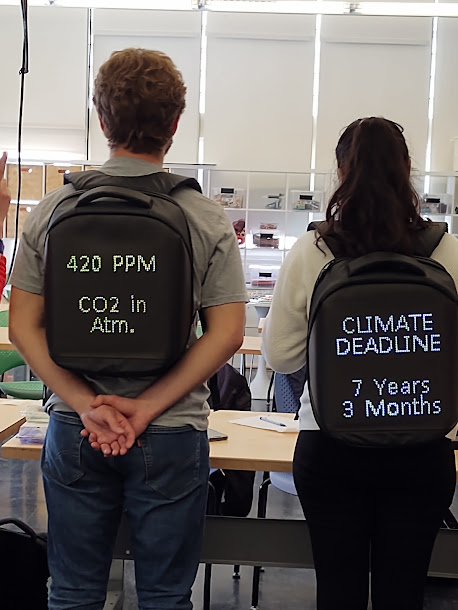
Vision of Hope
"Together we can change!"
This project has given us hope. As one team member, Jenning Chen, MIT'21,
puts it "I am a senior. I am graduating after four years. Yet this is the
best thing I have ever done at MIT."
History has shown that with united action, we can have a global impact.
It's been done before. For example, as a direct result of global actions
taken after signing the historic Montreal Protocol, satellite data has shown
that the ozone hole has healed.
In 2021, climate campaigners at the Glasgow, Scotland Conference of the
Parties COP26 turned out in huge numbers, massively exceeding expectations.
Youth-led groups, such as Friday for the Future, Extinction Rebellion and
the Saturday Global Day of Action showed that the climate movement by youth
and ordinary citizens matters and can make a difference.
Humans are a powerful species — we have changed the climate of the entire
planet without intending to. Now, with conscious effort and the force of a
committed global community, we must help create a livable climate to survive.
By acting together, we can turn this emergency into an opportunity to create
a better world. The ultimate goal that we aspire to is a habitable and
equitable planet for all humans and all life on Earth.
Team
The Climate Clock projections have been a sustained effort on the part of an outstanding
team. The undergraduate and graduate cross-disciplinary team comes from Electrical
Engineering and Computer Science, Mechanical Engineering, Aero-Astro, Chemistry, the
Media Lab, as well as Harvard University Law and Medical Schools, all tied together
through the D-Lab class project.
Original team members include Alejandro Diaz (MIT'21, Course 6.2), Gabriela
Cazares (MIT'2020, Course 5, now in a Ph.D. at UC-Berkeley studying atmospheric
chemistry) and Lowry Yankwich, Harvard Law School '22, all three of whom kicked
off the pre-Climate Clock project during summer 2020.
In 2020, the team was joined by alumna Jillian James, MIT'10, '16, Course 16,
who has supported all aspects of the work. Spring 2021 term added new team members
Jenning Chen (MIT'21, Course 6.3) who worked with Alejandro to do all the programming,
as well as Gaurav Patekar, MIT'21, Media Lab, who did major design work with
Alejandro to ensure that the Climate Clock actually went live, first in Spring
2021 and then Fall/Winter 2021. Our team leaders and mentors are Susan Murcott
(MIT'92), Lecturer, MIT D-Lab and Julie Simpson, Research Engineer, MIT Sea Grant.